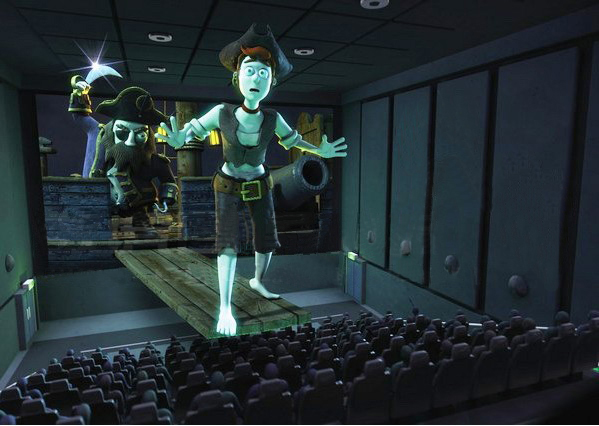

Dolby Atmos – sự phát triển đáng kể nhất trong công nghệ âm thanh kể từ âm thanh vòm, đang tạo ra sự thay đổi độc đáo trong kĩ thuật thiết kế âm thanh phân lớp, hiện đã có mặt tại Việt Nam và sẵn sàng phục vụ khách hàng tại Passion Cinema
Dolby Atmos sử dụng thiết kế phân lớp tân tiến để tạo nên các rãnh âm thanh. Lớp nền bao gồm các dải âm thanh môi trường tĩnh được phối theo phương pháp âm thanh phân luồng quen thuộc. Các lớp trên trần bao gồm các yếu tố âm thanh động được định hướng và thay đổi một cách chính xác theo hình ảnh hiển thị trên màn hình trong rạp. Bằng cách lắp đặt hệ thống loa ở trên đầu và xung quanh, Dolby Atmos có thể khiến khán giả trải nghiệm những âm thanh trung thực và tự nhiên như thật của bộ phim.
Máy chiếu Christie là giải pháp hình ảnh cao cấp cho nhu cầu giải trí, với độ phân giải 1080p - 4k. ( có số điểm ảnh bề ngang cao gấp 4 lần so với chuẩn full HD). Ngoài ra máy còn mang đến cho khán giả những trải nghiệm hình ảnh chân thật hơn nhờ hệ thống thấu kính của mình.
Với hệ thống máy chiếu Christie đã được trang bị, CineStar Cinema hy vọng sẽ mang lại những trải nghiệm điện ảnh đích thực dành cho khán giả.
Công nghệ chiếu phim 2D Digital là công nghệ chiếu phim kỹ thuật số 2 chiều, mang tới hình ảnh rõ nét cho khán giả yêu điện ảnh. Khán giả sẽ không phải mang kính khi xem phim 2D Digital.
So với công nghệ chiếu phim 35mm sử dụng bản phim nhựa, thì định dạng 2D Digital sẽ giải quyết trọn vẹn vấn đề xước bản phim gây khó chịu cho khán giả, mang lại hình ảnh sắc nét hơn.
Hiện tại, tất cả phòng chiếu của CineStar đều trang bị công nghệ chiếu phim 2D Digital.
So với công nghệ chiếu phim 2D Digital (Kỹ thuật số 2 chiều), công nghệ 3D Digital (Kỹ thuật số 3 chiều) cho phép khán giả cảm nhận thêm chiều sâu của hình ảnh, giúp cho không gian điện ảnh trở nên sống động như không gian thực mà chúng ta đang sống.
Phim 3D được quay từ tối thiểu hai máy cùng một lúc, từ hai góc nhìn khác nhau tương ứng với hoạt động của hai mắt người. Khi xem phim khán giả sẽ cần đeo kính 3D để lọc hình ảnh cho mỗi mắt, khi qua não bộ sẽ chập lại tạo thành hình ảnh không gian ba chiều.
Hiện tại, tất cả phòng chiếu của CineStar đều trang bị công nghệ chiếu phim 2D Digital.
Các phòng chiếu phim 3D Digital này đều sử dụng màn hình tráng bạc để giảm thiểu lượng hao hụt ánh sáng một cách tối đa.
